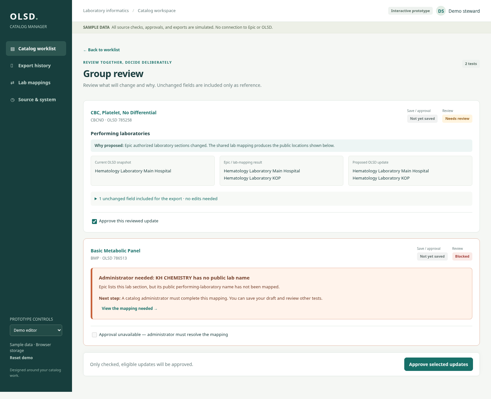
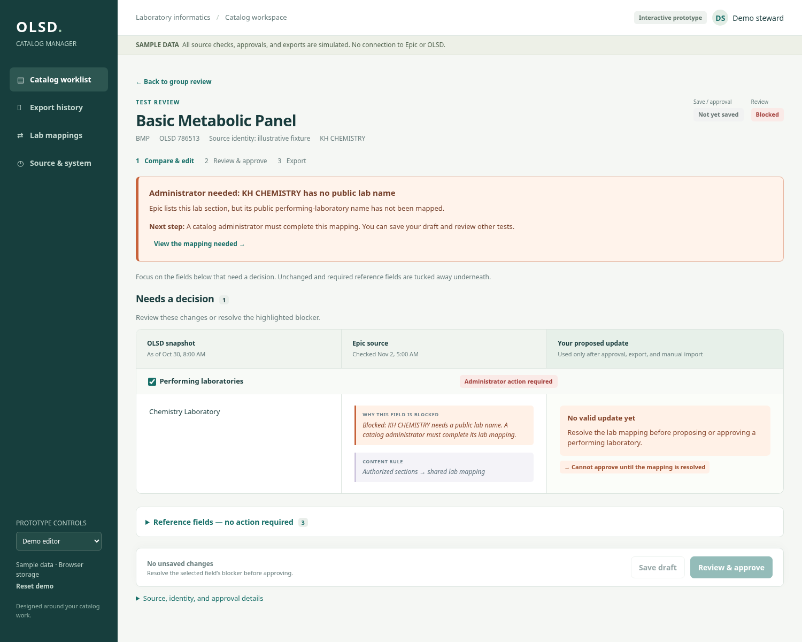
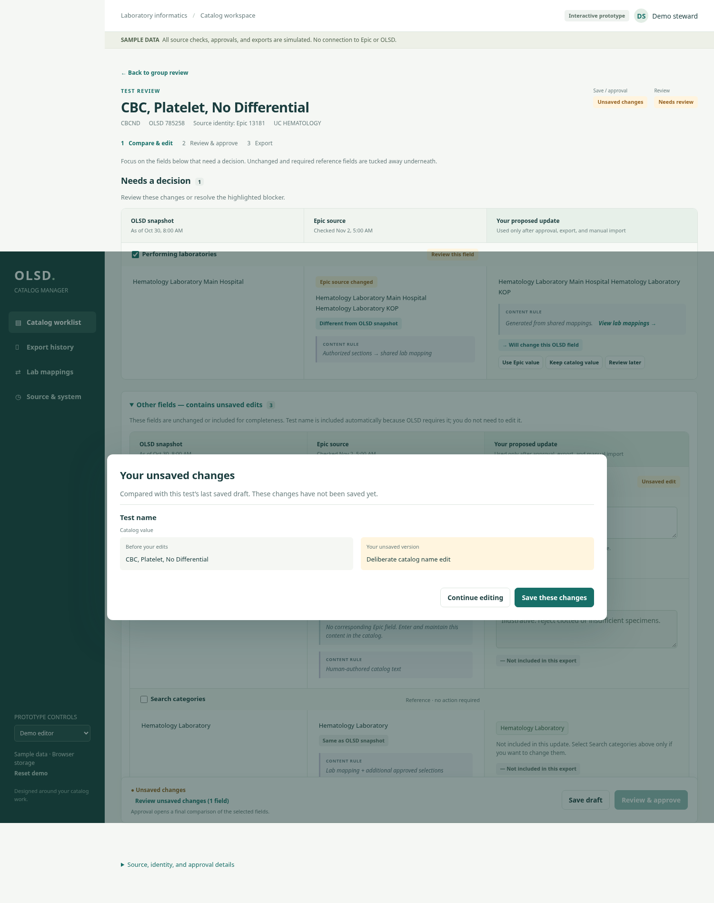

OLSD catalog workflow prototype
A sample-data interface for comparing a laboratory catalog snapshot with Epic-derived information, preserving editorial content, reviewing updates, and exporting approved Excel files.
Open the interactive prototype · Read the complete HTML/JavaScript source · Automated check results
Design prototype only. The source checks, clinical content, user roles, and approvals are simulated. There are no live Epic, OLSD, Connect, pin, or institutional database connections. Excel downloads contain sample data and must not be imported into a live catalog.
What the user wants
- Find a specific test, compare current OLSD observations with Epic, and edit catalog content.
- Review a summary of nightly Epic changes, then review individual tests or selected groups.
- Retain the latest uploaded OLSD snapshot and display its date. Preserve saved drafts alongside newer observations.
- Keep intentional catalog wording when Epic changes, and retain reviewed differences in a separate filter.
- Save drafts explicitly, warn before leaving unsaved changes, and let editors approve their own updates.
- Use administrator-only global laboratory/category changes and OLSD snapshot updates.
- Record exports and compare later OLSD snapshots without claiming real-time publication.
Walkthrough for a reviewer
- From the worklist, select CBCND and BMP, then choose Review selected. CBC should explain the source-driven laboratory change. BMP should explain its mapping blocker and disabled approval.
- Open BMP. Its missing KH CHEMISTRY public-laboratory mapping should be prominent and identify the administrator next step.
- Open CBC. Needs a decision should focus attention on the performing-lab change. Unchanged fields sit in collapsed Reference fields — no action required.
- Expand reference fields. Test name is included automatically, read-only until explicitly edited. Make a deliberate edit and choose Review unsaved changes to compare exact saved and unsaved values.
- For TSH, choose Keep catalog value, save, and look in Reviewed differences. A subsequent simulated Epic check should preserve that wording and return the new difference to review.
- Use the clearly marked demo administrator control to try shared mapping resolution and snapshot updates. It is a role simulation, not authentication.
- Approve a reviewed update and choose Download OLSD update. The dialog names tests and changes; it downloads an Excel file directly. Different selected columns require separate named Excel files.
- In export history, load a later sample snapshot as the demo administrator and inspect matching, discrepant, and extra-category results.
Useful questions for an independent review
- Can a steward quickly tell what changed, why it changed, what needs a decision, and what is only reference?
- Are saving, review decisions, approval, exporting, and observing a later snapshot distinct and understandable?
- Are blocked actions explained at the point of use with a practical next step?
- Does the UI make accidental name changes or loss of authored content unlikely?
- Does category handling communicate optional extra assignments without making users understand importer internals?
- Where could group approvals, shared changes, or stale snapshots create ambiguity?
Separate observed UI issues from production implementation gaps. Clinical text in these examples is illustrative; it is not clinical guidance.
Implementation boundaries
This is one static HTML file with browser-local storage. Simulated role restrictions are enforced in its UI and handlers, and can be bypassed through browser developer tools. Production requires authenticated server-side authorization, scheduled source checks, validated identity linking, safe shared-state serialization, migration fidelity, institutional connectivity, clinical review, and vendor acceptance testing.
There are 91 passing browser checks, including Excel readback with openpyxl. These checks establish prototype behavior, not production readiness. No uploaded handoff, SQL, archived pin data, credentials, browser-local drafts, or production exports are included in the public site.
Focused group review

Prominent blocker and reference fields

Exact unsaved changes
